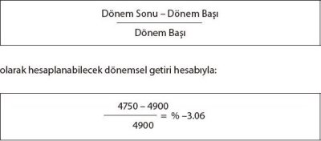

Yukarıda, örnek mali tablolar üzerinden çeşitli rasyolar hesaplanmıştır. Söz konusu rasyoların hesaplanması esnasında, dikkat edilmesi gereken hususların başında, "tabloların iyi niyetle hazırlanmış olması" gelmektedir. Devamında ise aktarma-arındırma işlemlerinin yapılmış olması, "ortalama" hesapları için iki yılın değerlerinin ortalamasının alınmış olması gereklidir.
Karşılaştırmalı Analiz (Yatay Analiz)
Genel hatlarıyla incelemiş olduğumuz rasyo analizini takiben, mali analizin ikinci temel versiyonuna geçiyoruz. Bu noktada işletmenin mali tablolarını dönemler bazında incelemeyi amaçlayan yatay analizi inceleyeceğiz.
Karşılaştırmalı tablolar analizi, bir işletmenin iki veya daha fazla dönemine ilişkin mali tablolarının birbirini izleyen dönemler bakımından karşılaştırmalı olarak düzenlenmesi ve bu tablolarda yer alan kalemlerin zaman içinde göstermiş olduğu değişikliklerin incelenerek değerlendirilmesidir.
Bu analiz yöntemi ile işletmenin zaman içinde göstermiş olduğu gelişme saptanabilmektedir. Mali tabloların karşılaştırılmasıyla, işletmenin geçmişteki ve bugünkü durumu görülerek aradaki farklar saptanmakta ve bu bilgiler ışığında gelecekte oluşacak gelişmeler öngörülmektedir. Karşılaştırmalı tablolar analizinde beklenen yararın sağlanabilmesi için:
• Karşılaştırmaya esas alınan dönemlerin aynı uzunlukta olması,
• Tablonun içerdiği bilgilerin aynı muhasebe kuram ve ilkelerine göre belirlenmiş olması,
• Rakamların enflasyondan arındırılarak birbiri ile karşılaştırılabilir olması gerekmektedir.
Karşılaştırmalı tablolar, bir işletmenin birden fazla dönemlerine ait mali tabloların kendi aralarında karşılaştırılmasıyla elde edilmektedir. Burada, cari dönemin tablosu, geçmiş dönemin veya dönemlerin aynı türdeki mali tablosu ile karşılaştırılmakta ve ortaya çıkan artış ve azalışlar, hem mutlak değer olarak hem de yüzde olarak hesaplanmaktadır.
Bu konuyu açıklamak için bir örnek verelim:
XYZ Şirketi 31.12.2008 – 31.12.2009 Tarihli Karşılaştırmalı Bilançosu
| YATAY ANALİZ | ||||
| BİLANÇO KALEMİ | 2008 (TL) | 2009 (TL) | 2009-2008 (TL) | % |
| Dönen Varlıklar | 7500 | 8200 | 700 | 9,30 |
| Maddi Duran Varlıklar | 4000 | 4040 | 40 | 1,00 |
| Maddi Olm. Duran Var. | 2500 | 3510 | 1010 | 40,4 |
| Toplam Aktifler | 14000 | 15750 | 1750 | 12,50 |
| Kısa Vadeli Borçlar | 7000 | 8500 | 1500 | 21,42 |
| Uzun Vadeli Borçlar | 2100 | 2500 | 400 | 19,04 |
| Toplam Borçlar | 9100 | 11000 | 1900 | 20,87 |
| Öz Kaynaklar | 4900 | 4750 | –150 | –3.06 |
| Toplam Pasifler | 14000 | 15750 | 1750 | 18.57 |
Tabloda da görüldüğü üzere, işletmenin 2008 ve 2009 tarihli bilançoları yan yana getirilmiş ve aynı kalemler yıllar itibarıyla değerlendirilmiştir. Örneğin toplam aktifler kalemi 2008 yılında 14.000 TL iken, bu değer 2009 yılında 15.750 TL’ye yükselmiştir. Bu artışın yüzde değeri, son kolonda-yatay analiz kolonunda 1.750 TL’lik bir artış olarak tespit edilmiş ve bu artışın %12.50’lik bir değişime denk geldiği belirlenmiştir. Benzer biçimde daha detay bir kalem olan öz kaynaklarda ise 150 TL’lik bir azalma kaydedilmiş ve bu durum:

olarak hesaplanmıştır. Görüldüğü üzere, yatay analiz farklı tarihli iki mali tablonun dönemler itibarıyla yatay olarak değerlendirilmesi esasına dayanmaktadır.
Yüzde Yöntemi ile Analiz (Dikey Analiz)
Yatay analizde işletmenin farklı dönemlerinin durumları kıyaslamak suretiyle analiz edilmekteydi. Dikey analizde ise işletmenin kendi içinde mali tablolarının dinamikleri incelenmektedir. Buna göre mali tablonun ana kalemi (örneğin gelir tablosu için satışlar) baz bir değere (100) eşitlenmekte, diğer kalemler ise söz konusu bu baza göre ayarlanmaktadır.
Yüzde yöntemi ile analiz tekniğinde, mali tablolarda yer alan kalem aynı tabloda yer alan belirli bir kaleme veya toplama (bilançoda aktif büyüklüğü, gelir tablosunda toplam satışlar) oranlanmakta ve bulunan yüzdelere göre ifade edilmektedir. Başka bir deyişle mali tablolarda yer alan kalemin küme toplamı içindeki oranı hesaplanmaktadır.
Bilançonun yüzde yöntemi ile analizinde, bilanço toplamı 100 kabul edilerek her bir kalemin aktif toplamına oranı, diğer taraftan gelir tablosunun yüzde yöntemi ile analizinde net satışlar 100 kabul edilmekte ve gelir tablosunun verilerinin net satışlara oranı hesaplanmaktadır.
Dikey analiz, işletmenin kaynaklarının dağılımını göstermesi bakımından önemlidir. Dikey yüzdeler analiziyle işletme kaynaklarının ne kadarının döner varlıklarda, ne kadarının maddi duran varlıklarda olduğu ve yıllar itibarıyla bu dağılımdaki değişim gösterilerek işletme kaynaklarının kullanım alanları yansıtılır.
XYZ Şirketi 31.12.2008 – 31.12.2009 Tarihli Dikey Analizi
| DİKEY ANALİZ | ||||
| BİLANÇO KALEMİ | 2008 (TL) | 2009 (TL) | 2008 (%) | 2009 (%) |
| Dönen Varlıklar | 7500 | 8200 | 53,57 | 52,07 |
| Maddi Duran Varlıklar | 4000 | 4040 | 28,57 | 25,65 |
| Maddi Olm. Duran Var. | 2500 | 3510 | 17,86 | 22,28 |
| Toplam Aktifler | 14000 | 15750 | 100 | 100 |
| Kısa Vadeli Borçlar | 7000 | 8500 | 50,00 | 53,97 |
| Uzun Vadeli Borçlar | 2100 | 2500 | 15,00 | 15,87 |
| Öz Kaynaklar | 4900 | 4750 | 35,00 | 30,16 |
| Toplam Pasifler | 14000 | 15750 | 100 | 100 |
Yukarıda verilmiş olan örnek dikey analizde ise, işletmenin örnek bilançosunun kalemleri, "toplam aktifler" kaleminin alt parçası olarak değerlendirilmektedir. Buna göre, bir işletmenin bilançosunun toplam değerini ifade eden toplam varlıklar (ki bu değer toplam kaynaklara eşit olacaktır) 100 baz değerine eşitlenecek, alt maddeler ise, söz konusu baz değeri ifade eden aktif toplamının yüzdesi olarak ifade edilecektir. Yukarıdaki örnekte, 2009 yılında, aktif toplamı 15.750 iken, bunun 8200 TL lik kısmı dönen varlıklardan oluşmaktadır. Bu değer dikey 2009 kolonundan takip edildiğinde, aktif toplamının %52’sinin dönen varlıklardan oluştuğu ve işletmenin aktifinin yarısından daha büyük bir kısmının nakit ya da 1 yıldan kısa sürede nakde çevrilmesi muhtemel kısım olduğu yorumu yapılabilecektir.
Eğilim Yüzdeleri Yöntemi (Trend Analizi)
Bu yöntemde, mali tablolarda bir yıl baz yıl, olarak kabul edilmekte ve o yıla ait tutarlar 100 kabul edilerek bunu izleyen dönemlere ilişkin aynı tür değerlerin baz yılına göre yüzde olarak değişimi hesaplanmaktadır. Eğilim yüzdeleri analizinde, işletmelerin mali tablolarında yer alan kalemlerin dönemler arasında göstermiş olduğu artış veya azalışlar saptanmakta ve bu değişikliklerin temel yıla göre oransal değişimleri ortaya konularak işletmenin gelişme yönü incelenmektedir. Seçilen temel yıl, her yönden normal olan ve olağanüstü etmenlerin etki yapmamış olduğu bir yıl olmalıdır. Eğilim yüzdelerine göre hazırlanmış bilançoların analiz ve yorumunda, birbiriyle ilişkili olan kalemlerin göstermiş oldukları eğilimlerin karşılaştırılarak birlikte değerlendirilmesi gerekir. Örneğin, dönen varlıklardaki eğilim değerlendirilirken kısa vadeli borçlardaki değişmenin de göz önünde bulundurulması yararlı olur. Söz konusu analizi bir örnek üzerinde inceleyelim:
XYZ Şirketi 31.12.2008 – 31.12.2009 Tarihli Trend Analizi
| TREND ANALİZİ | ||||
| BİLANÇO KALEMİ | 2008 (TL) | 2009 (TL) | 2008 | 2009 |
| Dönen Varlıklar | 7500 | 8200 | 100 | 109,3 |
| Maddi Duran Varlıklar | 4000 | 4040 | 100 | 101 |
| Maddi Olm. Duran Var. | 2500 | 3510 | 100 | 140,4 |
| Toplam Aktifler | 14000 | 15750 | 100 | 112,5 |
| Kısa Vadeli Borçlar | 7000 | 8500 | 100 | 121,4 |
| Uzun Vadeli Borçlar | 2100 | 2500 | 100 | 119,0 |
| Öz Kaynaklar | 4900 | 4750 | 100 | 96,9 |
| Toplam Pasifler | 14000 | 15750 | 100 | 112,5 |
Yukarıdaki örnek trend analizi, daha önce de yapılan açıklamalardan da anlaşılacağı üzere, baz yıl değerlerinin 100 baz değere eşitlenmesi ve yıllar itibarıyla değişen değerlerin söz konusu baz yıla göre değişimini göstermek esasına göre hazırlanmıştır. Böylesi bir çalışmanın uzun süreli datanın elde bulunmasıyla daha anlamlı olacağı açıktır; zira yukarıdaki örnekteki gibi bir uygulama, yatay analiz benzeri olacaktır.
Fon Akım Analizi
Bir firmanın mali analizinde kullanılan metodlardan biri de fon akım analizi veya fon kaynakları ve kullanımları tablosunun oluşturulmasıdır. Önceki bölümlerde fon kaynakları ve kullanımları tablosu aktarılmıştır.
Söz konusu tabloların analiz amaçlı hazırlanması aşamasında "fon" kavramının tanımlanması gerekmektedir. Fon, geniş anlamda bir kavram olup, nakit, brüt işletme sermayesini, net işletme sermayesini veya hazır değerleri ifade edebilmektedir. Aşağıda nakit esasına göre hazırlanacak fon akım tablosunun, diğer bir deyişle nakit akım tablosunun oluşturulması aktarılmıştır.
A. Dönem Başı Nakit
B. Fon Kaynakları
• Dönen varlıklardaki azalış (kasa hesabı hariç),
• Duran varlıklardaki azalış,
• Kısa vadeli borçlardaki artış,
• Uzun vadeli borçlardaki artış,
• Öz sermayedeki artış.
C. Fon Kullanımları
• Dönen varlıklardaki artış (kasa hesabı hariç),
• Duran varlıklardaki artış,
• Kısa vadeli borçlardaki azalış,
• Uzun vadeli borçlardaki azalış,
• Öz sermayedeki azalış.
Ç. Dönem İçi Yaratılan Fon Fazlası (B - C)
D. Dönem Sonu Nakit Bakiyesi (A + Ç)
Net İşletme Sermayesi Değişim Tablosu
Firmaların bankalardan talep ettikleri kısa vadeli nakit kredilerin kullanım amacı, genellikle dönen varlıkların ve özellikle de stok ve alacakların finansmanıdır. Sabit sermaye yatırımı gibi konulara bankalar kısa vadeli kredi kullanımı açısından sıcak bakmazlar.
Kısa süreli banka kredileri genellikle dönen varlıkların finansmanında kullanıldığından ve dönen varlıkların paraya çevrilmesi yoluyla geri ödendiklerinden, kredi talebinde bulunan firmanın işletme sermayesinin yeterliliği, diğer bir deyişle likiditesi üzerinde bankaların önemle durmaları gerekmektedir.
Firmaların likidite durumu analiz edilirken net işletme sermayesi hesaplanabilir. Net işletme sermayesi, diğer bir deyişle firmanın faaliyetlerini sürdürebilmesi için gerekli sermaye, bilançoda dönen varlıklar ile kısa vadeli borçların farkı alınarak hesaplanır.
Mali analizde firmanın net işletme sermayesinin hesaplanması, dönemler itibarıyla net işletme sermayesindeki değişikliğin (azalış veya artış) saptanması ve bunun nedenlerinin yorumlanması, firmanın likidite analizi için gerekli bir çalışma olacaktır.
MALİ ANALİZDE SEKTÖREL FARKLILIKLARIN İNCELENMESİ
Mali analiz, seçilen metodla hesaplanan rakamların yorumunu gerektiren bir çalışmadır. Örneğin yapılan rasyo analizi sonucunda firmanın faaliyetleri, mali yapısı, likiditesi, kârlılığı veya büyüme politikaları ile ilgili çeşitli oranlar hesaplanabilir. Mali analiz çalışmasının amacına ulaşması için bu hesaplanan rasyoları yorumlamak ve dikkat çekici oranların nedenlerini araştırmak gerekmektedir. Bu kapsamda yapılacak çalışmada firmanın faaliyet gösterdiği sektörün özelliği önem kazanmaktadır. Öyle ki yapısı farklı olan iki sektörde faaliyet gösteren firmaların da yapısı birbirinden farklı olacak ve bu farklılıklar mali analiz sonucuna yansıyacaktır. Bu nedenle mali analiz çalışması yapılırken firmaların faaliyet konularına bağlı olarak yorumlanması daha sağlıklı sonuçlara ulaşmamızı sağlayacaktır.
Firmanın mali analizinde aşağıdaki dört farklı faaliyet alanından hangisinde yer aldığı belirlenmeli ve ilgili sektör ortalamaları dikkate alınarak analiz edilmelidir. Bu dört farklı faaliyet alanı:
• Sanayi firmaları,
• Ticaret firmaları,
• Hizmet firmaları,
• Taahhüt firmalarıdır.
Söz konusu dört farklı faaliyet alanına ait mali yapılar aşağıdaki tabloda özetlenmiştir:
| KRİTER | SANAYİ | TİCARET | HİZMET | TAAHHÜT |
| Sermaye İhtiyacı | Yüksek | Orta | Değişir | Düşük |
| Boçluluk (Borçlar/ Toplam Aktifler) | Orta | Yüksek-Orta | Yüksek | Çok Yüksek |
| Likidite | Ölçülmemeli | |||
| İşletme Ser. İhtiyacı | Yüksek | Yüksek | Değişir | |
| Yatırım Tutarı | Yüksek | Düşük | Değişir | |
| Kârlılık (Kâr Marjı/Satışlar) | Ölçülmemeli |
Ancak yine de söz konusu sektörlerin özellikleri vaka çalışmaları ile netleşebilecektir.
Muhasebe ve mali analiz konuları, bu denli kısa bir alanda aktarılamayacak kadar detaylı ve bir o kadar da önemli konulardır. Ancak biz, amacımızı bir kez daha hatırlayarak temel bilgileri, en kısa biçimde okura aktarmak amacıyla olmayacak bir şeyi oldurmaya çalıştığımızı bir kez daha belirtmek istiyoruz. Bu anlamda, bu denli kısa bir alanda hem mali tabloları tanıtmayı hem de onların analizini özetlemeye çalışmayı, biraz da çekinerek tamamlamış bulunuyoruz.